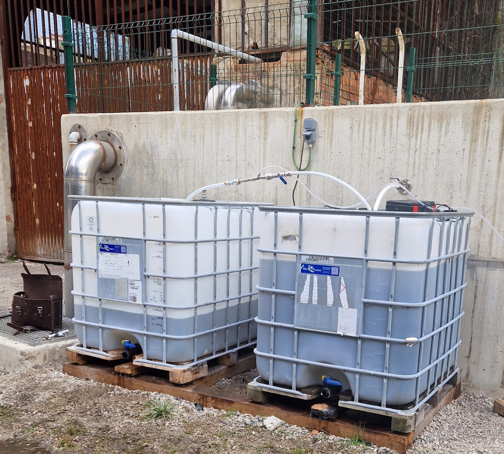

Rikkivety · verkostot, prosessivesi, lammikot
Korroosio, haju ja turvallisuusongelma.
Rikkivetyä muodostuu kaikkialla missä happi loppuu. SansOx joko estää muodostumisen nostamalla liuennutta happea tai poistaa liuenneen sulfidin hallitussa putkireaktiossa.
Kolme paikkaa joissa se esiintyy
Jätevesiviemäröinti
Nosta liuennutta happea ennen kuin hajuvalitukset ja betonin korroosio kasvavat rakenteelliseksi korjaukseksi.
Teollisuuden prosessivesi
Käsittele sulfidi hallitussa putkivaiheessa, jatkuvatoimisella seurannalla määräaikaisen näytteenoton sijaan.
Altaat ja lammikot
Paranna happiolosuhteita ja vähennä hapettomuuden vaikutuksia syvänteessä.
Miksi se maksaa enemmän kuin miltä näyttää
Rikkivety budjetoidaan yleensä hajuongelmana. Haju on siitä halvin osa.
Vaurio syntyy vedenpinnan yläpuolella
Sulfidi poistuu vedestä kaasuna ja hapettuu rikkihapoksi virtauksen yläpuolisilla kosteilla pinnoilla. Happo tekee työn. Siksi viemäri pettää laesta ja pohja säilyy, ja siksi korjaus on investointi eikä kunnossapitoa.
Valitukset tulevat jonkun muun aikataululla
Asukkaat huomaavat hajun ennen laitoksen käyttäjää, mikä tekee siitä yhtä lailla poliittisen kuin teknisen. Kestävä vastaus vaatii tallenteen siitä mitä verkostossa tapahtui kyseisenä hetkenä.
Varoitus katoaa kun riski kasvaa
Se haistuu hyvin pieninä pitoisuuksina, mutta suuremmat turruttavat hajuaistin: varoitus pettää juuri silloin kun sillä on merkitystä. Ahtaissa tiloissa se on hengenvaarallinen asia, ei haitta.
Yleinen mekanismi, esitetty tässä taustaksi. Kyse on tavanomaisesta vesitekniikasta, ei väitteestä tästä teknologiasta.
Kaksi vipua, eivätkä ne ole vaihtoehtoisia
Estä muodostuminen
Pidä liuennutta happea saatavilla, jotta hapettomat olot eivät synny. Vaikuttaa ylävirrassa, olosuhteisiin, ja on halvempi vipu silloin kun geometria sen sallii.
Käsittele jo muodostunut sulfidi
Kun sulfidi on jo liuoksessa, vipu on putkessa tapahtuva reaktio. Se vaikuttaa valitussa pisteessä eikä koko verkoston matkalla.
Valinta on mittaus, ei tuoteluettelopäätös
pH ratkaisee pysyykö sulfidi liuoksessa vai poistuuko se kaasuna, ja kuorma vaihtelee viipymän, lämpötilan ja sulfaatin mukaan. Kumpi vipu pätee ja missä, seuraa järjestelmän mittaamisesta.

Asennus olemassa olevaan prosessivesilinjaan — ei allasta, ei uudelleenrakentamista. Yksikkö istuu laippojen väliin siihen linjaan joka on jo olemassa.
Miksi putkessa eikä pintailmastuksena
Kohdennettu syöttö syvyyteen
Kaasu menee sinne missä ongelma on, ei pintaan.
Ei pyöriviä osia
Ei liikkuvia osia vedessä olevan OxTube-yksikön sisällä.
Toimii jään alla
Soveltuu jään alla käyttöön kun se on suunniteltu kohteeseen.
Mitä meillä on ja mitä ei
Todellinen H₂S-koe on olemassa — asiakkaan itsensä mittaama ja raportoima, ei meidän. Suomalainen sellu- ja paperitehdas, jätevedenpuhdistamo, 17.9.2021. Mitattu kahdessa pisteessä (esiselkeytyksestä poistuva vesi ja tasausaltaan ohitusoja). Ohitusojalla: H₂S-ravistustesti laski yli 100 ppm:stä 0 ppm:ään OxTuben läpi pumpatussa vedessä; liuennut happi nousi 0,15:stä noin 3 mg/l:aan muutamassa minuutissa; redox-potentiaali siirtyi −370 mV:sta noin −90…−150 mV:iin; ja vedessä ollut FeS-sakka hajosi (liukoinen rauta nousi noin 1:stä 8 mg/l:aan). Tehtaan oma yhteenveto: OxTube pystyi hapettamaan kummassakin pisteessä tehokkaasti tuubin läpi pumpattua vettä, ja H₂S-vapautuminen loppui hapetetussa vedessä. Tehtaan nimeä ei julkaista tässä ennen kuin lupa on kysytty.

Kaivospilotti, Pohjois-Espanja, 9.12.2025. OxTube-yksikkö kaivovedessä.
Myös espanjalainen pilotti on olemassa — ja sen H₂S-tulos on rehellisesti epävarma. Kaivos Pohjois-Espanjassa, 9.12.2025: OxTube-yksikkö kaivovedessä nosti liuenneen hapen 0,98:sta noin 2,84 mg/l:aan noin kahdessa tunnissa. H₂S-poistoa ei voitu todentaa — kova tuuli (11–17 m/s) ja viereinen ylivuotoputki vääristivät kaasumittauksen. Suositus jatkoon: kaksi OxTube-yksikköä ja jatkuva DO/H₂S/pH/ORP-mittaus.
Olemassa oleva dokumentaatio on listattu pilottisivulla.
Ensin mittaus, sitten annostus.
Pilotti selvittää mitä verkosto todella tarvitsee ennen kuin mitään laitetta mitoitetaan.
Määritä pilotti